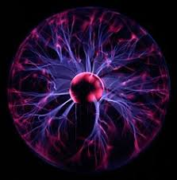

Rymden är enormt stort, mycket större än vad vi människor någonsinn kommer att se. Hela rymden byggs upp av miljoner galaxer som har miljarder stjärnor i sig, och bland en av dessa miljarder stjärnor ligger vår sol som jorden roterar runt.
Materia är allt fysiskt material som finns i rymden, det är till exemple planeter, stjärnor, galaxer mm. Det är allt det man kan ta på och som du ser så är det bara en liten del av rymden som är gjort av detta.

Till skillnad mot vanlig materia som är fysiskt är mörk materia teoretiskt. Man vet igentligen inte om mörk materia existerar men man har teroretiskt sätt kommit på ett material som ska fylla detta tomma området, detta material är mörk materia. Eftersom man inte vet vad mörk materia igentligen är så kan man inte veta vad för egenskaper det har eller vad det igentligen är.
Mörk energi presis som mörk materia är teroretiskt. Man tror att det är de krafter som påvärkar hur allt flöder i universum man man kan inte vara säker om det tills att man har hittat bevis för detta.